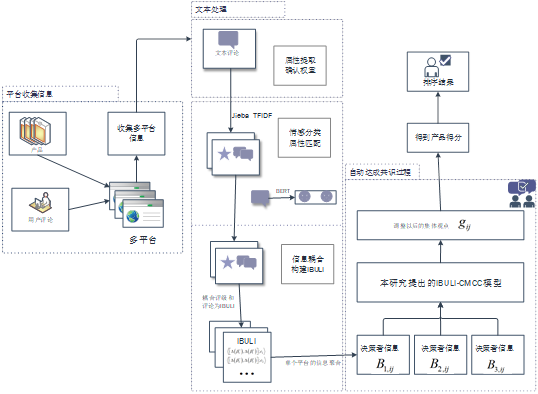

论文研究流程 · 点击查看原图 ↗独立科研项目 · 第一作者
多平台电商评论分析与产品综合评价
独立科研项目。采集京东、淘宝、苏宁等平台商品评论，完成去重、分句、中文分词、停用词过滤与评分标准化；通过 TF-IDF、预训练 BERT 和余弦相似度进行主题匹配，将评论转化为多属性评价信息；构建共识优化模型，使用 Gurobi 完成评价融合、综合排序及敏感性分析。
第一作者论文 · 已发表Mengwan Liu, Shitao Zhang*, Xiaodi Liu. Building adaptive linguistic consensus for product selection using coupled multi-platform online reviews and ratings. Journal of Theoretical and Applied Electronic Commerce Research, 2026, 21(11), 404.SSCI · JCR Q2 · IF=4.5阅读已发表论文 ↗